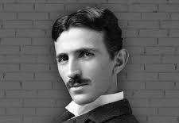

Who was Nikola Tesla?
Nikola Tesla (1856-1943) was a brilliant Serbian-American scientist, inventor, electrical engineer, and futurist. He is best known for his groundbreaking work in electrical engineering and the development of alternating current (AC) electricity, which revolutionized power distribution and electrical systems.
Contributions to Science
Tesla made numerous important contributions to science and technology, including the invention of the Tesla coil, wireless communication technologies, and the development of the rotating magnetic field, which is the basis for modern AC electric power systems. His innovative ideas and inventions have had a profound impact on the world and continue to shape technology today.
Legacy and Impact
Nikola Tesla's ideas and inventions laid the foundation for many modern technologies, and his vision of a wireless world and clean energy have inspired generations of scientists, engineers, and inventors. His name is synonymous with innovation and brilliance, and he remains a celebrated figure in the history of science and engineering.
Remembering a Genius
Nikola Tesla's work and legacy continue to be admired and celebrated worldwide. His contributions to science and technology have left an indelible mark on society, and he will always be remembered as one of the greatest inventors and scientists in history.